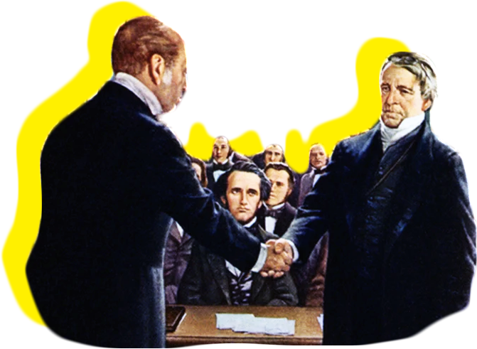

The history of U.S. abortion rights is still being written.
Scroll down to educate yourself.

In 1847, doctors banded together to form the AMA. It became the
male-dominated authority on medical practices. The AMA
scrutinized reproductive health care workers, like midwives and
nurses, and the obstetric services they provided were phased
out.
AMA members believed they should have the power to decide when
an abortion could be legally performed. At the same time, the
AMA was
composed of physicians who lacked expertise in pregnancy and
reproductive health.
AMA members launched a full-fledged criminalization campaign
against abortion and female abortion providers. State
legislatures moved to ban abortion.
This backlash kicked off a “century of criminalization,” which
was ended by Roe v. Wade in 1973.
Laws restricting abortion access became the norm.
By 1880, all states had laws to restrict abortion — with
exceptions in some states if a doctor said the abortion was
needed to save the life or health of the patient, or for
therapeutic reasons.
As abortion became criminalized, the
stigma surrounding it grew.
"If each woman were allowed to judge for herself in this matter, her decision upon the abstract question would be too sure to be warped by personal considerations, and those of the moment: Woman's mind is prone to depression , and, indeed, to temporary actual derangement, under the stimulus of uterine excitation..." -HR Storer, 1866
By 1910, abortion was not only restricted but outright illegal
at every stage in pregnancy in every state in the country. These
abortion bans had some exceptions in instances to save the
patient’s life — a decision that only doctors,
95% of whom were men, had the power to make.
By this time, America had experienced several decades of
increased immigration.
Worried about losing their hold on the country, white men in
power supported abortion bans as a way to get upper-class
white women to have more children.
Criminalizing abortion sent the practice underground, which
resulted in a high death toll.
Unsafe, illegal abortion was the cause of death for nearly 2,700
women in 1930 —
almost one out of every five (18%) of recorded maternal
deaths
that year, according to the Guttmacher Institute.
In the late 1950s and early ’60s, thousands of pregnant women
took a drug called thalidomide to ease pregnancy symptoms. The
problem: It was found to cause severe birth defects.
In 1962, a pregnant TV host who ingested thalidomide could not
obtain a legal abortion in the United States. The media tracked
her journey to get an abortion in Sweden, and 52% of Americans
supported her.
The thalidomide fallout brought greater support for abortion law
reform.
In 1964, abortion law reform activists registered their first
national group: the Association for the Study of Abortion (ASA).
Planned Parenthood joined doctors and laypeople leading the ASA
in advocating for abortion law reforms and for studies that
would advance abortion procedure safety.
In a strategic move to incrementally increase abortion access,
the ASA advocated only for "medically necessary" abortions. But
members of the larger abortion law reform movement wanted a full
repeal to legalize abortion for all people.
Nine well-respected doctors were sued in California for
performing abortions on women who had been exposed to rubella, a
disease known to cause birth defects.
Doctors across the country came to the defense of the San
Francisco Nine, including the deans of 128 medical schools.
This resulted in one of the first abortion reform measures in
the United States. California amended its prohibition on
abortion to allow hospital committees to approve requests for
abortion.
The National Association for the Repeal of Abortion Laws (NARAL)
was established in Chicago at the First National Conference on
Abortion Laws.
NARAL was the first national group created solely to campaign
for the legalization of abortion, marking the start of direct
action to repeal abortion bans.
By the late 1960s, a nationwide effort was underway to reform
abortion laws in nearly every state.
Health care providers, advocates, clergy members, and the legal
community lobbied state legislatures and went to court to
overturn statutes that had been in place since before the turn
of the century. Between 1967 and 1973, four states — Alaska,
Hawaii, New York, and Washington — repealed their abortion bans
entirely, while 13 others enacted reforms that expanded
exceptions.
Instead of just allowing for abortion to save the patient’s
life,
they now allowed it in instances where a pregnancy was
dangerous for the physical or mental health of a patient,
fetal abnormalities, and when the pregnancy resulted from rape
or incest.
In 1970, New York state legalized abortion. One day after that
law took effect, a Planned Parenthood health center in Syracuse
became the the first Planned Parenthood health center to provide
abortion services, and the first free-standing abortion center
nationwide.
In the first two years after abortion was legalized in New York,
two-thirds of the abortions performed in the state were on
patients who had traveled from other states
— most of which still outlawed abortion. At the time, other
states that had legalized abortion required patients to be state
residents.
In a landmark decision, the U.S. Supreme Court ruled that the
due process clause of the 14th Amendment to the Constitution
protects the right to abortion.
In particular, the Supreme Court recognized for the first time
that the
constitutional right to privacy “is broad enough to encompass
a woman’s decision whether or not to terminate her
pregnancy.”
Roe v. Wade protected the right to abortion in all 50 states,
making abortion services safer and more accessible throughout
the country.
The decision also set a legal precedent that affected dozens of
subsequent Supreme Court cases.
The Hyde Amendment is a discriminatory and racist policy that
prevents federal dollars from being used in government
insurance programs like Medicaid for abortion
services
(except in instances of incest, rape, or life-threatening risk
to the pregnant person).
The legislation was created by Rep. Henry Hyde. “I would
certainly like to prevent, if I could legally, anybody having an
abortion: a rich woman, a middle class woman, or a poor woman,”
he said. “Unfortunately, the only vehicle available is the
[Medicaid] bill.”
Because of centuries of systemic racism and bias, Medicaid
disproportionately serves Black, Latino, and LGBTQ+ communities
— people who already face other barriers to care and economic
opportunity. Despite the federal law, 16 states currently
include abortion in their Medicaid programs using state funds.
(The remaining 34 states and the District of Columbia do not
have abortion coverage in their Medicaid programs due to the
Hyde Amendment).
Thanks in large part to the advocacy of reproductive justice
organizations, in 2021 the Biden-Harris administration became
the first administration in decades to exclude the Hyde
Amendment from its presidential budget.
Former President Ronald Reagan introduced the Mexico City
policy, otherwise known as the global gag rule, in 1984.
The global gag rule
prevents foreign organizations that receive U.S. health aid
from providing information on and referrals for abortions or
advocating for abortion access.
Every president since Reagan who supports abortion access has
rescinded the global gag rule, while every president since
Reagan who opposes abortion access has reinstated it.
That includes President Donald Trump, who not only reinstated
it, but expanded the global gag rule to make it even more
harmful.
This landmark case reaffirmed that the Constitution protects the
right to abortion. However, Casey created an “undue burden”
framework, under which laws restricting access to abortion would
be judged.
This framework made it more difficult to challenge laws that
were less than absolute prohibitions on abortion —
requiring challenges to show that a law has the purpose or
effect of placing a substantial obstacle in the path of a
patient seeking an abortion.
Following Casey, state politicians passed numerous medically
unnecessary abortion restrictions across the country which
courts have found do not impose an undue burden.
The Supreme Court upheld the first federal legislation to
criminalize abortion, allowing Congress to ban certain
second-trimester abortion procedures — which are sometimes the
safest and best way to protect a patient’s health.
Because the legislation does not contain an exception for the
patient’s health, the
Supreme Court effectively overruled a key component of Roe v.
Wade: that the patient’s health must be of paramount concern
in laws that restrict abortion access.
The Supreme
Court ruled that two Texas abortion restrictions were
unconstitutional because they would shut down most abortion
providers in the state and impose an “undue burden” on access to
safe, legal abortion in Texas.
On June 29, 2020 — in June Medical Services v. Russo — the
Supreme Court struck down a medically unnecessary law that was
nearly identical to the one it had struck down in Whole Woman’s
Health.
This law would have made abortion virtually inaccessible in
Louisiana. Four justices dissented, and it was the last time
Ruth Bader Ginsburg had a chance to rule on abortion access
before she died later that year.
Ginsburg was replaced by Amy Coney Barrett — who is one of three
Supreme Court justices nominated by Donald Trump.
On Sept. 1, 2021, Texas
implemented a dangerous law called S.B. 8. which bans
abortion at approximately six weeks of pregnancy — before many
people even know they’re pregnant.
The AMA denounced the Texas abortion ban, but the Supreme Court
allowed it to take effect.
This history of abortion laws and
court decisions provides important context to the road ahead.
Right now, 80% of Americans want abortion to be legal.
On December 1, 2021, the Supreme Court will hear oral arguments
in Dobbs v. Jackson Women’s Health Organization — a case about a
Mississippi ban on abortion at 15 weeks that’s a direct
challenge to Roe v. Wade. The state of Mississippi not only has
asked the Supreme Court to allow a pre-viability abortion ban,
in violation of one of the core tenets of Roe v. Wade, but also
has asked the Supreme Court to overrule Roe and Casey entirely.
The Supreme Court will issue a decision in Dobbs v. Jackson
Women’s Health Organization by the end of June 2022.
If Roe is overturned or its protections are dismantled, then
the laws governing abortion will fall to individual state
governments. Many people of reproductive age will lose access
to safe, legal abortion in the United States.
You can take action.
Read up, and support the cause for abortion rights.